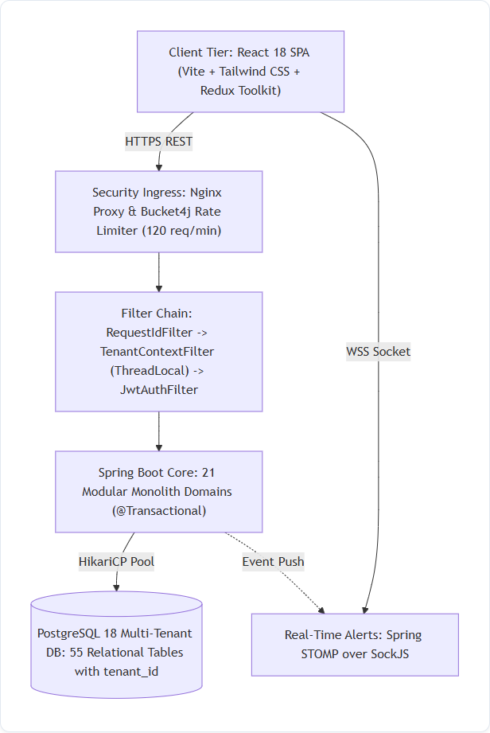
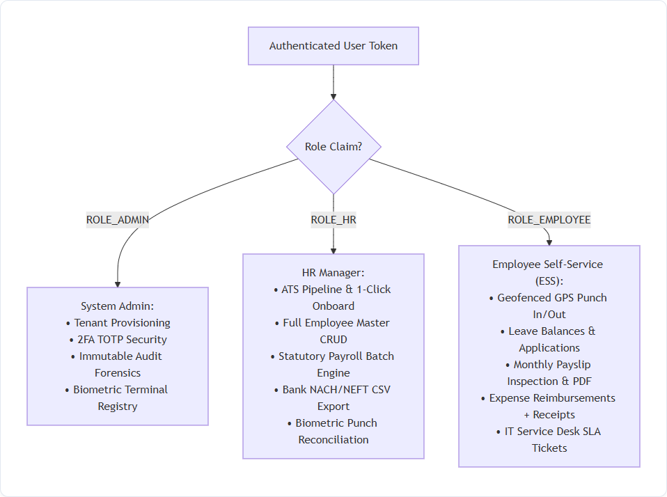
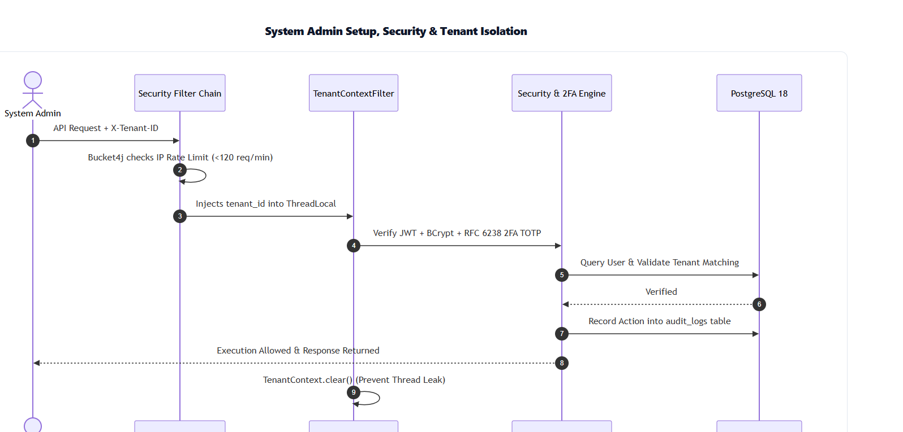
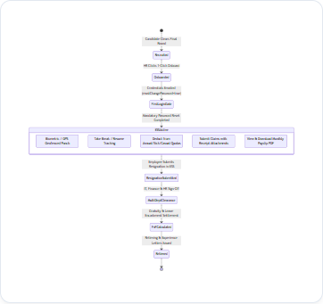
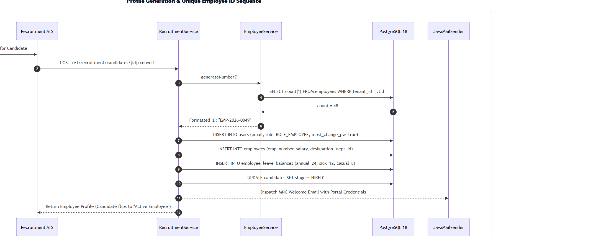
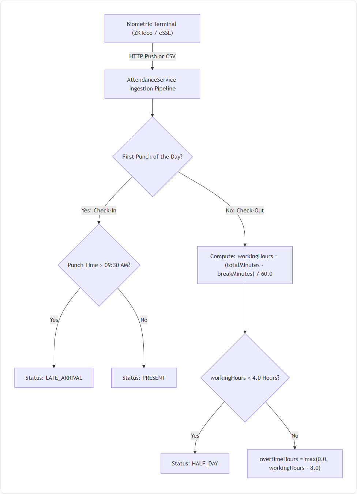
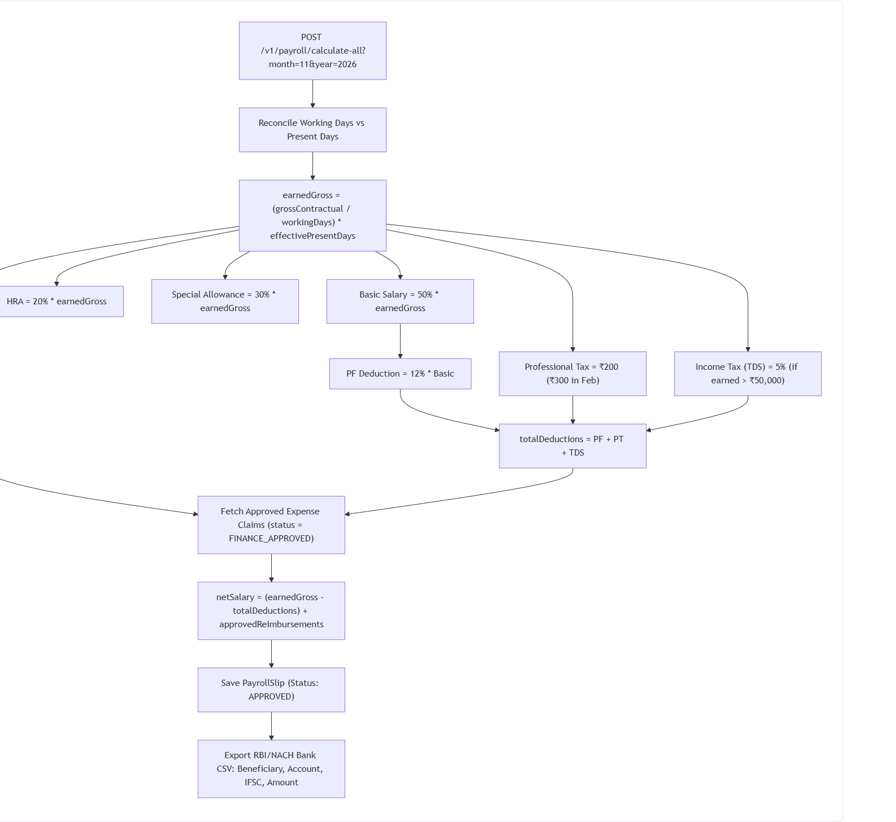
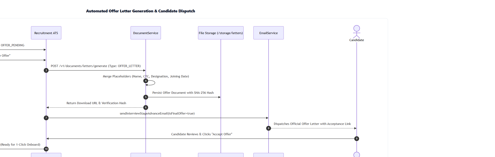

HRMS Platform — Complete Operational Process Blueprint
A visual, step-by-step technical documentary detailing high-scale multi-tenancy, deterministic employee ID provisioning, biometric turnstile ingestion, statutory payroll calculations, and failure-mode edge cases.
High-Level System Architecture & Flow
The system uses an Enterprise Multi-Tenant Modular Monolith. Requests from browsers hit an Nginx gateway and a rate limiter before entering the Spring Boot 3 core. Every company's data is strictly isolated using tenant_id discriminator columns across 55 database tables.

Client Interaction (React 18 SPA)
User performs an action in the UI. Axios attaches the authenticated JWT bearer token and X-Tenant-ID: eoxys header.
Security Gateway & Filter Chain
Bucket4j validates IP rate limits (120 req/min). TenantContextFilter injects tenant ID into Java ThreadLocal. JwtAuthenticationFilter validates claims and role authorities.
Transactional Business Core & Database
Spring @Transactional domain services execute business rules. Queries are scoped with tenant_id, preventing cross-organization leakage.
Role-Based Actions: HR Manager vs. Employee vs. Admin
Employees are strictly sandboxed in their Employee Self-Service (ESS) portal (seeing only their own profile, attendance, and payslips). HR Managers have company-wide authority over hiring, directory CRUD, and payroll. System Admins control technical multi-tenant settings and security.

System Admin Setup, Security & Tenant Isolation

Complete Employee Lifecycle (Day-1 to Exit Relieving)
Covers candidate conversion, initial login gate (forced password change), daily self-service attendance and expense claims, formal resignation, 4-department clearance, and final relieving letter issuance.

Profile Generation & Deterministic Employee ID Logic
When an HR Manager clicks 1-Click Onboard, the system calculates the permanent ID (EMP-YYYY-XXXX), generates temporary login credentials, initializes 24 Annual / 12 Sick / 8 Casual leave balances, and sends a corporate Welcome Email.

Biometric Integration & Attendance Calculation Rules
Physical biometric turnstiles push logs via REST or CSV. First punch = check-in. If checked in after 09:30 AM, status is flagged as Late. Check-out deducts break minutes. If total worked time is under 4.0 hours, status shifts to Half Day.

if (workingHours < 4.0) status = AttendanceStatus.HALF_DAY;
overtimeHours = Math.max(0.0, workingHours - 8.0);
Statutory Payroll Engine & Bank NACH/NEFT Disbursements
Calculates prorated gross pay based on working vs present days. Splits salary into 50% Basic, 20% HRA, and 30% Special Allowance. Deducts 12% PF, PT, and TDS. Integrates approved expense claims into net pay and exports an RBI-compliant bank transfer CSV.

Automated Offer Letter Generation & Dispatch

Critical Production Edge Cases & Defenses
Cross-Midnight Night Shifts (22:00 → 06:00)
Punches occurring before shift grace periods link to the previous calendar day's check-in, avoiding broken duration calculations across midnight.
Loss of Pay (LOP) Prorations for Absences
Unapproved absences dynamically scale earned gross (earnedGross = perDayRate * effectivePresentDays), scaling down all statutory deductions and preventing overpayment.
Single Punch Anomaly & Regularization
Nightly cron marks unclosed check-ins as INCOMPLETE_PUNCH. Employee submits an attendance regularization dispute ticket in ESS for manager sign-off.
Async Worker Thread Context Loss
TenantAwareTaskDecorator copies tenant_id from HTTP request threads into Spring @Async background worker pools, preventing cross-tenant data leaks.